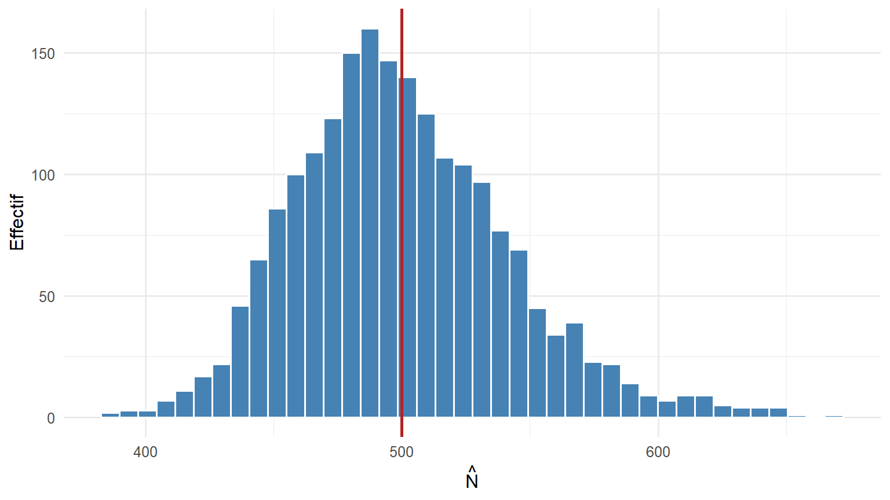
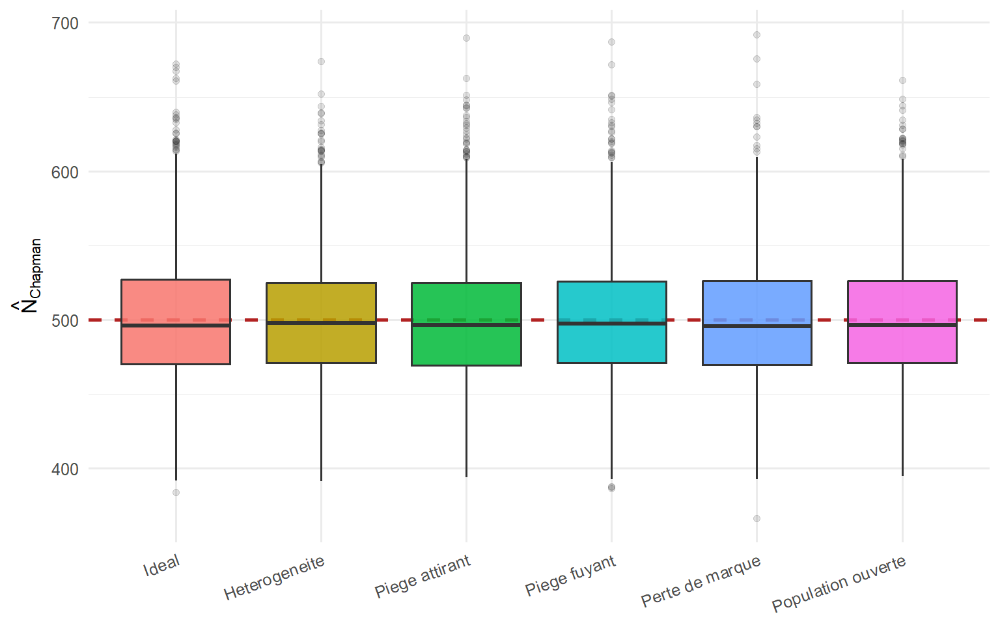

Code
lincoln_petersen <- function(M, C, R) M * C / R
# Correction de Chapman : moins biaisée sur les petits échantillons,
# et calculable même lorsque R = 0.
chapman <- function(M, C, R) (M + 1) * (C + 1) / (R + 1) - 1Principe, simulation, et effet de la violation des hypothèses
6 août 2026
On veut estimer le nombre total d’individus d’une population que l’on ne peut pas compter directement. La méthode de capture-marquage-recapture y parvient à partir de deux échantillonnages successifs. Nous établirons d’abord l’estimateur, puis nous étudierons par simulation comment il se comporte lorsque les hypothèses sur lesquelles il repose ne sont pas respectées, situation courante sur le terrain.
La méthode se déroule en deux temps.
Le raisonnement repose sur une égalité de proportions. Une proportion est ici la part d’individus marqués dans un ensemble. Si le second échantillon est représentatif de la population, alors la proportion de marqués qu’il contient doit être la même que la proportion de marqués dans la population entière :
\[ \underbrace{\frac{M}{N}}_{\substack{\text{proportion de marqués} \\ \text{dans la population}}} \;=\; \underbrace{\frac{R}{C}}_{\substack{\text{proportion de marqués} \\ \text{dans la seconde capture}}} \]
Cette égalité n’est valable que sous une hypothèse précise, dite d’égale capturabilité : tous les individus, marqués ou non, doivent avoir la même chance d’être capturés lors de la seconde occasion. En résolvant l’égalité pour isoler l’effectif inconnu \(N\), on obtient l’estimateur de Lincoln-Petersen (du nom des deux auteurs qui l’ont proposé) :
\[ \widehat{N}_{\text{LP}} = \frac{M \, C}{R} . \]
Le chapeau sur \(\widehat{N}\) indique qu’il s’agit d’une estimation de \(N\), et non de la vraie valeur. L’ensemble du chapitre consiste à relâcher, une à une, les hypothèses qui rendent cette égalité correcte, et à mesurer dans quel sens l’estimation se trouve alors faussée.
lincoln_petersen <- function(M, C, R) M * C / R
# Correction de Chapman : moins biaisée sur les petits échantillons,
# et calculable même lorsque R = 0.
chapman <- function(M, C, R) (M + 1) * (C + 1) / (R + 1) - 1L’estimateur de Lincoln-Petersen présente deux défauts sur les petits échantillons : il surestime l’effectif en moyenne, et il devient impossible à calculer lorsque aucun individu marqué n’est recapturé (le nombre \(R\) vaut alors zéro, et l’on diviserait par zéro). La correction de Chapman corrige ces deux défauts. Nous l’utiliserons comme estimateur de référence dans tout le chapitre.
Le terme biais désigne l’écart entre la valeur moyenne d’un estimateur, calculée sur un très grand nombre d’échantillons, et la vraie valeur cherchée. Un estimateur qui surestime en moyenne est dit biaisé positivement.
Pour étudier les différentes situations, on programme un seul simulateur, dont chaque paramètre optionnel active une violation d’hypothèse. Par défaut, toutes les hypothèses sont respectées : population fermée, capturabilité identique pour tous, marques jamais perdues.
La probabilité de capture, notée \(p\), est la probabilité qu’un individu donné soit capturé au cours d’une occasion. Une valeur \(p = 0{,}35\) signifie qu’en moyenne 35 pour cent des individus sont capturés à chaque occasion.
simule_session <- function(N, p,
het = 0, # heterogeneite de capturabilite (0 = identique pour tous)
reponse = 1, # reponse au piege : facteur applique a p des marques a l'occasion 2
# valeur > 1 = piege attirant ; valeur < 1 = piege fuyant
perte = 0, # probabilite de perte de marque
survie = 1) { # probabilite qu'un marque soit encore present a l'occasion 2
## Probabilite de capture propre a chaque individu ------------------------
if (het > 0) {
# Les probabilites individuelles sont tirees dans une loi Beta de moyenne p.
# Plus `het` est grand, plus les individus different les uns des autres.
conc <- (1 - het) / het
p_i <- rbeta(N, p * conc, (1 - p) * conc)
} else {
p_i <- rep(p, N) # tous les individus ont la meme probabilite p
}
## Occasion 1 : capture puis marquage -------------------------------------
marque <- rbinom(N, 1, p_i) == 1
M <- sum(marque) # nombre de marques relaches
## Entre les deux occasions -----------------------------------------------
present <- rep(TRUE, N)
present[marque] <- rbinom(M, 1, survie) == 1 # mortalite ou depart des marques
perdu <- rbinom(N, 1, perte) == 1 # perte de la marque
marque_visible <- marque & present & !perdu # marque encore presente ET lisible
## Occasion 2 : capture ----------------------------------------------------
p2 <- p_i
p2[marque] <- pmin(p2[marque] * reponse, 1) # le comportement des marques peut changer
cap2 <- (rbinom(N, 1, p2) == 1) & present
C <- sum(cap2) # taille de la seconde capture
R <- sum(cap2 & marque_visible) # recaptures portant une marque lisible
c(M = M, C = C, R = R)
}Une seconde fonction répète la simulation un grand nombre de fois et calcule les deux estimateurs pour chaque répétition. La loi Beta, utilisée plus haut, est simplement une loi de probabilité qui produit des valeurs comprises entre 0 et 1 ; elle sert ici à attribuer à chaque individu sa propre probabilité de capture.
replique <- function(n_rep, N, p, ...) {
res <- replicate(n_rep, simule_session(N, p, ...)) # matrice a 3 lignes (M, C, R) et n_rep colonnes
tibble(
M = res["M", ], C = res["C", ], R = res["R", ],
LP = lincoln_petersen(M, C, R),
Chapman = chapman(M, C, R)
)
}On fixe une population de \(N = 500\) individus et une probabilité de capture \(p = 0{,}35\), puis on simule 2000 études indépendantes. La répartition des 2000 estimations obtenues s’appelle la distribution d’échantillonnage de l’estimateur : elle décrit la variabilité du résultat d’une étude à l’autre.
Pour résumer cette distribution, nous utilisons la médiane, c’est-à-dire la valeur qui partage les résultats en deux moitiés de tailles égales. On la préfère ici à la moyenne parce que l’estimateur de Lincoln-Petersen peut prendre des valeurs infinies (lorsque \(R\) vaut zéro), ce qui rendrait la moyenne inutilisable.
| LP : mediane | Chapman : mediane | part de R = 0 (LP infini) | Chapman : erreur quadratique moyenne |
|---|---|---|---|
| 499.1148 | 495.9714 | 0 | 1757.853 |
ggplot(ideal, aes(Chapman)) +
geom_histogram(bins = 40, fill = "steelblue", colour = "white") +
geom_vline(xintercept = N_vrai, colour = "firebrick", linewidth = 1) +
labs(x = expression(hat(N)), y = "Effectif")
Même lorsque toutes les hypothèses sont respectées, une étude isolée peut fournir une estimation éloignée de 500. C’est la variabilité d’échantillonnage, inhérente au fait de travailler sur un échantillon plutôt que sur la population entière. Cette observation justifie le recours à plusieurs occasions de capture, présenté en dernière section, plutôt qu’à une simple paire de captures.
Chaque scénario ci-dessous active une seule violation d’hypothèse. La consigne pour les étudiants est de prédire le sens du biais avant d’exécuter le code, puis de confronter cette prédiction aux résultats. Les quatre violations étudiées sont les suivantes.
scenarios <- list(
"Ideal" = list(),
"Heterogeneite" = list(het = 0.45),
"Piege attirant" = list(reponse = 1.6),
"Piege fuyant" = list(reponse = 0.5),
"Perte de marque" = list(perte = 0.20),
"Population ouverte" = list(survie = 0.70)
)
resultats <- lapply(names(scenarios), function(nom) {
args <- c(list(n_rep = n_rep, N = N_vrai, p = p), scenarios[[nom]])
do.call(replique, args) |> mutate(scenario = nom)
}) |>
bind_rows() |>
mutate(scenario = factor(scenario, levels = names(scenarios)))ggplot(resultats, aes(scenario, Chapman, fill = scenario)) +
geom_hline(yintercept = N_vrai, colour = "firebrick",
linewidth = 1, linetype = 2) +
geom_boxplot(alpha = 0.85, outlier.alpha = 0.15, show.legend = FALSE) +
labs(x = NULL, y = expression(hat(N)[Chapman])) +
theme(axis.text.x = element_text(angle = 20, hjust = 1))
Le tableau suivant chiffre le biais. Le biais relatif est l’écart de l’estimation médiane à la vraie valeur, exprimé en pourcentage de cette dernière : une valeur positive signale une surestimation, une valeur négative une sous-estimation.
| scenario | mediane de N estime | biais relatif |
|---|---|---|
| Ideal | 496 | -1 % |
| Heterogeneite | 498 | -0 % |
| Piege attirant | 496 | -1 % |
| Piege fuyant | 497 | -1 % |
| Perte de marque | 496 | -1 % |
| Population ouverte | 497 | -1 % |
À compléter avant d’exécuter la section précédente, puis à confronter aux résultats.
| Violation | Mécanisme en une phrase | Sens du biais prédit | Observé |
|---|---|---|---|
| Hétérogénéité de capturabilité | Les individus les plus faciles à capturer se retrouvent dans les deux échantillons | ? | |
| Piège attirant | Les individus marqués reviennent plus volontiers vers le dispositif | ? | |
| Piège fuyant | Les individus marqués évitent le dispositif après la première capture | ? | |
| Perte de marque | Un individu recapturé peut passer pour un individu nouveau | ? | |
| Population ouverte | Des individus marqués meurent ou partent entre les deux occasions | ? |
L’hypothèse d’égale capturabilité fixe l’égalité \(M/N = R/C\). Tout ce qui abaisse le nombre de recapturés \(R\), à \(M\) et \(C\) fixés, gonfle l’estimation \(\widehat N = MC/R\) ; tout ce qui augmente \(R\) la diminue. On en déduit chaque cas.
Une estimation ponctuelle comme \(\widehat N = 500\) ne dit rien de sa propre incertitude. On l’accompagne donc d’un intervalle de confiance, c’est-à-dire une fourchette de valeurs censée contenir la vraie valeur avec une probabilité fixée, ici 95 pour cent.
La qualité d’un tel intervalle se mesure par son taux de couverture : la proportion des études pour lesquelles l’intervalle contient effectivement la vraie valeur. Un intervalle honnête à 95 pour cent doit couvrir la vraie valeur dans 95 pour cent des études. Vérifions-le dans le cas idéal.
L’intervalle utilisé ici repose sur l’erreur-type de l’estimateur, notée se, qui est l’écart-type de sa distribution d’échantillonnage, autrement dit une mesure de sa variabilité d’une étude à l’autre. On construit l’intervalle en s’écartant de l’estimation de 1,96 erreur-type de part et d’autre, ce qui correspond au niveau de 95 pour cent pour une distribution approximativement symétrique.
var_chapman <- function(M, C, R) {
(M + 1) * (C + 1) * (M - R) * (C - R) / ((R + 1)^2 * (R + 2))
}
couv <- ideal |>
mutate(
se = sqrt(var_chapman(M, C, R)),
bas = Chapman - 1.96 * se,
haut = Chapman + 1.96 * se,
ok = N_vrai >= bas & N_vrai <= haut
)
sprintf("Taux de couverture observe : %.1f %% (cible : 95 %%)", 100 * mean(couv$ok))[1] "Taux de couverture observe : 94.3 % (cible : 95 %)"L’approximation utilisée suppose une distribution symétrique. Elle se dégrade lorsque le nombre de recapturés \(R\) est faible, car la distribution de l’estimateur devient alors dissymétrique, étalée vers les grandes valeurs. Une piste d’amélioration consiste à construire l’intervalle à partir de la loi de probabilité du nombre de recapturés, plutôt que par cette approximation.
Répéter les captures sur plusieurs occasions stabilise l’estimation. On note \(k\) le nombre d’occasions. À chaque occasion, indexée par la lettre \(t\), on relève trois quantités : \(C_t\), le nombre d’individus capturés ; \(M_t\), le nombre total d’individus déjà marqués dans la population avant cette occasion ; et \(R_t\), le nombre de recapturés à cette occasion. L’estimateur de Schnabel combine l’ensemble des occasions :
\[ \widehat N_{\text{Schnabel}} = \frac{\sum_{t} C_t \, M_t}{\sum_{t} R_t} , \]
où le symbole \(\sum_t\) signifie que l’on additionne sur toutes les occasions.
simule_schnabel <- function(N, p, k) {
marque <- rep(FALSE, N)
num <- den <- 0
for (t in seq_len(k)) {
cap <- rbinom(N, 1, p) == 1
Ct <- sum(cap)
Mt <- sum(marque) # individus deja marques AVANT cette occasion
Rt <- sum(cap & marque) # recaptures a cette occasion
num <- num + Ct * Mt
den <- den + Rt
marque <- marque | cap # on marque les nouveaux individus captures
}
num / den
}
# Distribution de l'estimateur sur 500 etudes a 6 occasions
schnabel <- replicate(500, simule_schnabel(N_vrai, p = 0.20, k = 6))
sprintf("Schnabel (6 occasions, p = 0.20) : mediane = %.0f",
median(schnabel[is.finite(schnabel)]))[1] "Schnabel (6 occasions, p = 0.20) : mediane = 500"mrClosed() du paquet FSA calcule les estimateurs de Petersen, Chapman et Schnabel avec plusieurs types d’intervalles de confiance. Le paquet Rcapture traite des modèles plus généraux, pour populations fermées comme ouvertes.marked et RMark.secr, prend en compte la position géographique des captures.Pour transformer ce chapitre en support de présentation, il suffit de remplacer format: html par format: revealjs dans l’en-tête, et de scinder le contenu aux titres de premier et de deuxième niveau. Les blocs de code restent identiques.
---
title: "Capture-marquage-recapture : estimer un effectif de population"
subtitle: "Principe, simulation, et effet de la violation des hypothèses"
lang: fr
date: today
format:
# pdf: default
html:
toc: true
toc-title: "Sommaire"
number-sections: true
code-fold: show
code-tools: true
code-link: true
theme: cosmo
fig-width: 8
fig-height: 4.5
df-print: kable
execute:
warning: false
message: false
knitr:
opts_chunk:
dev: "png"
fig.align: "center"
---
```{r}
#| label: setup
#| include: false
library(ggplot2)
library(dplyr)
theme_set(theme_minimal(base_size = 12))
set.seed(2026)
```
::: {.callout-note}
## Objectif du chapitre
On veut estimer le nombre total d'individus d'une population que l'on ne peut pas compter directement. La méthode de capture-marquage-recapture y parvient à partir de deux échantillonnages successifs. Nous établirons d'abord l'estimateur, puis nous étudierons par simulation comment il se comporte lorsque les hypothèses sur lesquelles il repose ne sont pas respectées, situation courante sur le terrain.
:::
::: {.callout-tip}
## Vocabulaire de départ
- **Population** : l'ensemble des individus étudiés, par exemple tous les individus d'une espèce sur un site donné.
- **Effectif** : le nombre total d'individus de la population. C'est la quantité inconnue à estimer, notée $N$.
- **Occasion de capture** : une session de terrain au cours de laquelle on tente de capturer des individus.
- **Marquage** : on appose une marque (bague, tatouage, encoche) sur les individus capturés, puis on les relâche.
- **Recapture** : lors d'une occasion ultérieure, un individu déjà marqué que l'on capture à nouveau est un recapturé.
- **Estimateur** : une formule de calcul appliquée aux données de terrain pour approcher une quantité inconnue, ici l'effectif $N$.
- **Population fermée** : population dont l'effectif ne varie pas entre les deux occasions, c'est-à-dire sans naissance, mort, arrivée ni départ dans l'intervalle.
:::
# Le principe : une estimation fondée sur une proportion
La méthode se déroule en deux temps.
1. On capture un premier échantillon, on marque les $M$ individus capturés, puis on les relâche. La lettre $M$ désigne donc le nombre d'individus marqués relâchés dans la population.
2. Lors d'une seconde occasion, on capture un nouvel échantillon de $C$ individus, parmi lesquels $R$ portent déjà une marque. La lettre $C$ désigne la taille de la seconde capture, et $R$ le nombre de recapturés (individus marqués retrouvés dans cette seconde capture).
Le raisonnement repose sur une égalité de **proportions**. Une proportion est ici la part d'individus marqués dans un ensemble. Si le second échantillon est représentatif de la population, alors la proportion de marqués qu'il contient doit être la même que la proportion de marqués dans la population entière :
$$
\underbrace{\frac{M}{N}}_{\substack{\text{proportion de marqués} \\ \text{dans la population}}}
\;=\;
\underbrace{\frac{R}{C}}_{\substack{\text{proportion de marqués} \\ \text{dans la seconde capture}}}
$$
Cette égalité n'est valable que sous une hypothèse précise, dite d'**égale capturabilité** : tous les individus, marqués ou non, doivent avoir la même chance d'être capturés lors de la seconde occasion. En résolvant l'égalité pour isoler l'effectif inconnu $N$, on obtient l'estimateur de Lincoln-Petersen (du nom des deux auteurs qui l'ont proposé) :
$$
\widehat{N}_{\text{LP}} = \frac{M \, C}{R} .
$$
Le chapeau sur $\widehat{N}$ indique qu'il s'agit d'une estimation de $N$, et non de la vraie valeur. L'ensemble du chapitre consiste à relâcher, une à une, les hypothèses qui rendent cette égalité correcte, et à mesurer dans quel sens l'estimation se trouve alors faussée.
```{r}
#| label: estimateurs
lincoln_petersen <- function(M, C, R) M * C / R
# Correction de Chapman : moins biaisée sur les petits échantillons,
# et calculable même lorsque R = 0.
chapman <- function(M, C, R) (M + 1) * (C + 1) / (R + 1) - 1
```
::: {.callout-note}
## Pourquoi deux estimateurs
L'estimateur de Lincoln-Petersen présente deux défauts sur les petits échantillons : il surestime l'effectif en moyenne, et il devient impossible à calculer lorsque aucun individu marqué n'est recapturé (le nombre $R$ vaut alors zéro, et l'on diviserait par zéro). La correction de Chapman corrige ces deux défauts. Nous l'utiliserons comme estimateur de référence dans tout le chapitre.
Le terme **biais** désigne l'écart entre la valeur moyenne d'un estimateur, calculée sur un très grand nombre d'échantillons, et la vraie valeur cherchée. Un estimateur qui surestime en moyenne est dit biaisé positivement.
:::
# Un simulateur unique et modulaire
Pour étudier les différentes situations, on programme un seul simulateur, dont chaque paramètre optionnel active une violation d'hypothèse. Par défaut, toutes les hypothèses sont respectées : population fermée, capturabilité identique pour tous, marques jamais perdues.
La **probabilité de capture**, notée $p$, est la probabilité qu'un individu donné soit capturé au cours d'une occasion. Une valeur $p = 0{,}35$ signifie qu'en moyenne 35 pour cent des individus sont capturés à chaque occasion.
```{r}
#| label: simulateur
simule_session <- function(N, p,
het = 0, # heterogeneite de capturabilite (0 = identique pour tous)
reponse = 1, # reponse au piege : facteur applique a p des marques a l'occasion 2
# valeur > 1 = piege attirant ; valeur < 1 = piege fuyant
perte = 0, # probabilite de perte de marque
survie = 1) { # probabilite qu'un marque soit encore present a l'occasion 2
## Probabilite de capture propre a chaque individu ------------------------
if (het > 0) {
# Les probabilites individuelles sont tirees dans une loi Beta de moyenne p.
# Plus `het` est grand, plus les individus different les uns des autres.
conc <- (1 - het) / het
p_i <- rbeta(N, p * conc, (1 - p) * conc)
} else {
p_i <- rep(p, N) # tous les individus ont la meme probabilite p
}
## Occasion 1 : capture puis marquage -------------------------------------
marque <- rbinom(N, 1, p_i) == 1
M <- sum(marque) # nombre de marques relaches
## Entre les deux occasions -----------------------------------------------
present <- rep(TRUE, N)
present[marque] <- rbinom(M, 1, survie) == 1 # mortalite ou depart des marques
perdu <- rbinom(N, 1, perte) == 1 # perte de la marque
marque_visible <- marque & present & !perdu # marque encore presente ET lisible
## Occasion 2 : capture ----------------------------------------------------
p2 <- p_i
p2[marque] <- pmin(p2[marque] * reponse, 1) # le comportement des marques peut changer
cap2 <- (rbinom(N, 1, p2) == 1) & present
C <- sum(cap2) # taille de la seconde capture
R <- sum(cap2 & marque_visible) # recaptures portant une marque lisible
c(M = M, C = C, R = R)
}
```
Une seconde fonction répète la simulation un grand nombre de fois et calcule les deux estimateurs pour chaque répétition. La loi **Beta**, utilisée plus haut, est simplement une loi de probabilité qui produit des valeurs comprises entre 0 et 1 ; elle sert ici à attribuer à chaque individu sa propre probabilité de capture.
```{r}
#| label: repliques
replique <- function(n_rep, N, p, ...) {
res <- replicate(n_rep, simule_session(N, p, ...)) # matrice a 3 lignes (M, C, R) et n_rep colonnes
tibble(
M = res["M", ], C = res["C", ], R = res["R", ],
LP = lincoln_petersen(M, C, R),
Chapman = chapman(M, C, R)
)
}
```
# Le cas idéal : l'estimateur fonctionne, mais varie
On fixe une population de $N = 500$ individus et une probabilité de capture $p = 0{,}35$, puis on simule 2000 études indépendantes. La répartition des 2000 estimations obtenues s'appelle la **distribution d'échantillonnage** de l'estimateur : elle décrit la variabilité du résultat d'une étude à l'autre.
Pour résumer cette distribution, nous utilisons la **médiane**, c'est-à-dire la valeur qui partage les résultats en deux moitiés de tailles égales. On la préfère ici à la moyenne parce que l'estimateur de Lincoln-Petersen peut prendre des valeurs infinies (lorsque $R$ vaut zéro), ce qui rendrait la moyenne inutilisable.
```{r}
#| label: ideal
N_vrai <- 500
p <- 0.35
n_rep <- 2000
ideal <- replique(n_rep, N_vrai, p)
ideal |>
summarise(
`LP : mediane` = median(LP[is.finite(LP)]),
`Chapman : mediane` = median(Chapman),
`part de R = 0 (LP infini)` = mean(!is.finite(LP)),
`Chapman : erreur quadratique moyenne` = mean((Chapman - N_vrai)^2)
)
```
```{r}
#| label: fig-ideal
#| fig-cap: "Distribution d'échantillonnage de l'estimateur de Chapman dans le cas idéal. Le trait rouge marque la vraie valeur, N = 500. Les estimations se répartissent autour de cette valeur."
ggplot(ideal, aes(Chapman)) +
geom_histogram(bins = 40, fill = "steelblue", colour = "white") +
geom_vline(xintercept = N_vrai, colour = "firebrick", linewidth = 1) +
labs(x = expression(hat(N)), y = "Effectif")
```
::: {.callout-tip collapse="true"}
## Ce qu'il faut observer
Même lorsque toutes les hypothèses sont respectées, une étude isolée peut fournir une estimation éloignée de 500. C'est la variabilité d'échantillonnage, inhérente au fait de travailler sur un échantillon plutôt que sur la population entière. Cette observation justifie le recours à plusieurs occasions de capture, présenté en dernière section, plutôt qu'à une simple paire de captures.
:::
# L'effet de la violation des hypothèses
Chaque scénario ci-dessous active une seule violation d'hypothèse. La consigne pour les étudiants est de prédire le sens du biais avant d'exécuter le code, puis de confronter cette prédiction aux résultats. Les quatre violations étudiées sont les suivantes.
- **Hétérogénéité de capturabilité** : les individus n'ont pas tous la même probabilité de capture. Certains sont naturellement plus faciles à capturer que d'autres.
- **Réponse au piège** : le fait d'avoir été capturé et marqué modifie le comportement de l'individu. S'il revient plus volontiers vers le dispositif de capture, on parle de piège attirant ; s'il l'évite, de piège fuyant.
- **Perte de marque** : un individu marqué peut perdre sa marque et être alors compté, lors de la recapture, comme un individu nouveau.
- **Population ouverte** : contrairement à l'hypothèse de population fermée, des individus marqués meurent ou quittent la zone entre les deux occasions.
```{r}
#| label: scenarios
scenarios <- list(
"Ideal" = list(),
"Heterogeneite" = list(het = 0.45),
"Piege attirant" = list(reponse = 1.6),
"Piege fuyant" = list(reponse = 0.5),
"Perte de marque" = list(perte = 0.20),
"Population ouverte" = list(survie = 0.70)
)
resultats <- lapply(names(scenarios), function(nom) {
args <- c(list(n_rep = n_rep, N = N_vrai, p = p), scenarios[[nom]])
do.call(replique, args) |> mutate(scenario = nom)
}) |>
bind_rows() |>
mutate(scenario = factor(scenario, levels = names(scenarios)))
```
```{r}
#| label: fig-labo
#| fig-cap: "Estimateur de Chapman selon le scénario simulé. Chaque hypothèse violée déplace la distribution des estimations d'un côté précis de la vraie valeur (trait rouge)."
#| fig-height: 5
ggplot(resultats, aes(scenario, Chapman, fill = scenario)) +
geom_hline(yintercept = N_vrai, colour = "firebrick",
linewidth = 1, linetype = 2) +
geom_boxplot(alpha = 0.85, outlier.alpha = 0.15, show.legend = FALSE) +
labs(x = NULL, y = expression(hat(N)[Chapman])) +
theme(axis.text.x = element_text(angle = 20, hjust = 1))
```
Le tableau suivant chiffre le biais. Le **biais relatif** est l'écart de l'estimation médiane à la vraie valeur, exprimé en pourcentage de cette dernière : une valeur positive signale une surestimation, une valeur négative une sous-estimation.
```{r}
#| label: tbl-biais
#| tbl-cap: "Biais relatif médian de l'estimateur de Chapman, par scénario."
resultats |>
group_by(scenario) |>
summarise(
`mediane de N estime` = round(median(Chapman)),
`biais relatif` = sprintf("%+.0f %%", 100 * (median(Chapman) / N_vrai - 1)),
.groups = "drop"
)
```
# Fiche de prédiction pour les étudiants
À compléter avant d'exécuter la section précédente, puis à confronter aux résultats.
| Violation | Mécanisme en une phrase | Sens du biais prédit | Observé |
|---|---|:--:|:--:|
| Hétérogénéité de capturabilité | Les individus les plus faciles à capturer se retrouvent dans les deux échantillons | ? | |
| Piège attirant | Les individus marqués reviennent plus volontiers vers le dispositif | ? | |
| Piège fuyant | Les individus marqués évitent le dispositif après la première capture | ? | |
| Perte de marque | Un individu recapturé peut passer pour un individu nouveau | ? | |
| Population ouverte | Des individus marqués meurent ou partent entre les deux occasions | ? | |
::: {.callout-important collapse="true"}
## Corrigé : sens et cause de chaque biais
L'hypothèse d'égale capturabilité fixe l'égalité $M/N = R/C$. Tout ce qui abaisse le nombre de recapturés $R$, à $M$ et $C$ fixés, gonfle l'estimation $\widehat N = MC/R$ ; tout ce qui augmente $R$ la diminue. On en déduit chaque cas.
- L'hétérogénéité de capturabilité conduit à une **sous-estimation**. Les individus très capturables se retrouvent dans les deux échantillons, ce qui augmente le nombre de recapturés au delà de ce qu'une population homogène produirait.
- Le piège attirant conduit à une **sous-estimation**, car les individus marqués, plus enclins à revenir, sont recapturés en excès.
- Le piège fuyant conduit à une **surestimation**, car les individus marqués évitent le dispositif et sont recapturés en défaut.
- La perte de marque conduit à une **surestimation**, car certains individus recapturés ne sont pas reconnus comme marqués, ce qui abaisse le nombre de recapturés.
- La population ouverte conduit à une **surestimation**, car la disparition d'individus marqués réduit le nombre de recapturés disponibles.
:::
# Complément : la fiabilité des intervalles de confiance
Une estimation ponctuelle comme $\widehat N = 500$ ne dit rien de sa propre incertitude. On l'accompagne donc d'un **intervalle de confiance**, c'est-à-dire une fourchette de valeurs censée contenir la vraie valeur avec une probabilité fixée, ici 95 pour cent.
La qualité d'un tel intervalle se mesure par son **taux de couverture** : la proportion des études pour lesquelles l'intervalle contient effectivement la vraie valeur. Un intervalle honnête à 95 pour cent doit couvrir la vraie valeur dans 95 pour cent des études. Vérifions-le dans le cas idéal.
L'intervalle utilisé ici repose sur l'**erreur-type** de l'estimateur, notée `se`, qui est l'écart-type de sa distribution d'échantillonnage, autrement dit une mesure de sa variabilité d'une étude à l'autre. On construit l'intervalle en s'écartant de l'estimation de 1,96 erreur-type de part et d'autre, ce qui correspond au niveau de 95 pour cent pour une distribution approximativement symétrique.
```{r}
#| label: couverture
var_chapman <- function(M, C, R) {
(M + 1) * (C + 1) * (M - R) * (C - R) / ((R + 1)^2 * (R + 2))
}
couv <- ideal |>
mutate(
se = sqrt(var_chapman(M, C, R)),
bas = Chapman - 1.96 * se,
haut = Chapman + 1.96 * se,
ok = N_vrai >= bas & N_vrai <= haut
)
sprintf("Taux de couverture observe : %.1f %% (cible : 95 %%)", 100 * mean(couv$ok))
```
::: {.callout-tip collapse="true"}
## Discussion
L'approximation utilisée suppose une distribution symétrique. Elle se dégrade lorsque le nombre de recapturés $R$ est faible, car la distribution de l'estimateur devient alors dissymétrique, étalée vers les grandes valeurs. Une piste d'amélioration consiste à construire l'intervalle à partir de la loi de probabilité du nombre de recapturés, plutôt que par cette approximation.
:::
# Complément : plusieurs occasions et l'estimateur de Schnabel
Répéter les captures sur plusieurs occasions stabilise l'estimation. On note $k$ le nombre d'occasions. À chaque occasion, indexée par la lettre $t$, on relève trois quantités : $C_t$, le nombre d'individus capturés ; $M_t$, le nombre total d'individus déjà marqués dans la population avant cette occasion ; et $R_t$, le nombre de recapturés à cette occasion. L'estimateur de Schnabel combine l'ensemble des occasions :
$$
\widehat N_{\text{Schnabel}} = \frac{\sum_{t} C_t \, M_t}{\sum_{t} R_t} ,
$$
où le symbole $\sum_t$ signifie que l'on additionne sur toutes les occasions.
```{r}
#| label: schnabel
simule_schnabel <- function(N, p, k) {
marque <- rep(FALSE, N)
num <- den <- 0
for (t in seq_len(k)) {
cap <- rbinom(N, 1, p) == 1
Ct <- sum(cap)
Mt <- sum(marque) # individus deja marques AVANT cette occasion
Rt <- sum(cap & marque) # recaptures a cette occasion
num <- num + Ct * Mt
den <- den + Rt
marque <- marque | cap # on marque les nouveaux individus captures
}
num / den
}
# Distribution de l'estimateur sur 500 etudes a 6 occasions
schnabel <- replicate(500, simule_schnabel(N_vrai, p = 0.20, k = 6))
sprintf("Schnabel (6 occasions, p = 0.20) : mediane = %.0f",
median(schnabel[is.finite(schnabel)]))
```
# Pour aller plus loin
- **Estimateurs prêts à l'emploi et jeux de données réels** : la fonction `mrClosed()` du paquet `FSA` calcule les estimateurs de Petersen, Chapman et Schnabel avec plusieurs types d'intervalles de confiance. Le paquet `Rcapture` traite des modèles plus généraux, pour populations fermées comme ouvertes.
- **Populations ouvertes** : lorsque la population n'est pas fermée, la mortalité et le recrutement cessent d'être des biais à corriger pour devenir des paramètres à estimer. Les modèles de Cormack-Jolly-Seber (pour la survie) et de Jolly-Seber (pour l'effectif, la survie et le recrutement) répondent à ce besoin, via les paquets `marked` et `RMark`.
- **Hétérogénéité assumée** : les modèles dits de type $M_h$ traitent explicitement la variabilité de capturabilité entre individus. La capture-recapture spatiale, via le paquet `secr`, prend en compte la position géographique des captures.
---
::: {.callout-note appearance="minimal"}
Pour transformer ce chapitre en support de présentation, il suffit de remplacer `format: html` par `format: revealjs` dans l'en-tête, et de scinder le contenu aux titres de premier et de deuxième niveau. Les blocs de code restent identiques.
:::